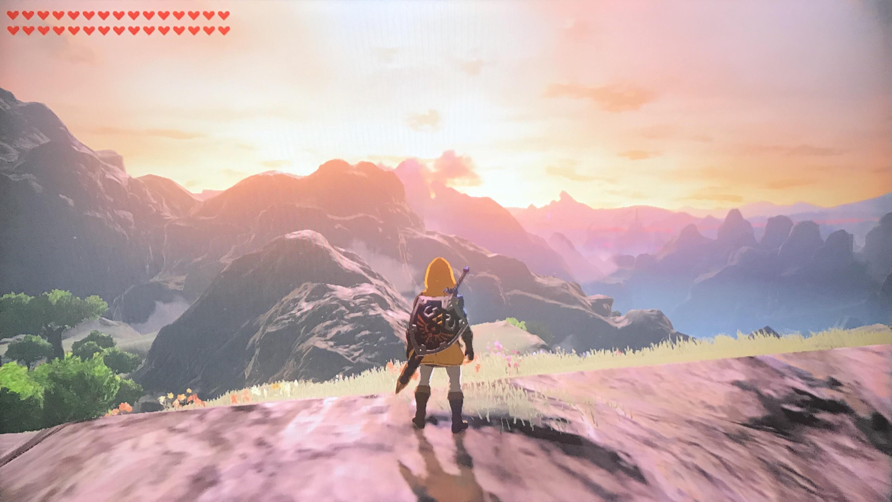

Moodboard Surchargée

Moodboard Synthétique

Analysynth est un jeu d'Action Aventure solo sur PC en 3D.
Le joueur incarne Syntheros un épéiste ayant perdu la vue lors d'un duel contre le maître d'arme Analysthes.
Suivant les conseils d'Analysthes, Syntheros part améliorer sa maîtrise de l'épée pour le défaire lorsque l'heure de leur prochaine rencontre sonnera...
Analysynth est un jeu sur la maîtrise et comment elle peut s'exprimer via le synthétisme.
Le jeu sera constitué de quatre niveaux et de 6 boss (Furi). Chaque niveau se terminera par un boss.
A chaque boss vaincu, Syntheros passera un cap de maîtrise.
Le jeu a trois composants essentiels :
Les combats se concentrent sur la parade et la riposte (Sekiro).
L'ensemble des techniques de combat sont disponibles dès le début. Cependant elles ont toutes une combinaison de touche différentes associés et sont donc complexe à utiliser.
Lors de la synthétisation du game design, ces différents coups seront assigné à une même et unique touche.
Le jeu commence par un combat contre Analysthes, servant aussi de tutoriel. Suite à cela, le joueur sera libre de choisir le niveau auquel il souhaite jouer.
Chaque niveau sera représenté par une île. Pour chaque île, Syntheros devra vaincre l'ensemble des sbires présent avant de pouvoir combattre le boss.
S'il échoue avant le boss, sa progression est perdue et il doit recommencer le niveau. S'il échoue contre le boss, il n'a pas à refaire le niveau, seulement à recommencer le combat contre le boss.
Lorsque les boss des 4 îles sont vaincus, Syntheros peut alors aller affronter Analysthes le boss final du jeu.
Chaque île a une "spécialité" parmi : les graphismes, le son, l'ui et le game design.
Pour chaque boss vaincu, Syntheros passera un cap de maîtrise de l'épée.
Ce changement sera représenté par une synthétisation de la spécialité de l'île associée.
Le contraste entre l'expérience avant et après la synthétisation permettra au joueur de voir, entendre, comprendre et jouer la maîtrise de l'épée de Syntheros (The Messenger).
Le groupe "Nero's day at Disneyland" est une grande inspiration pour la partie sonore surchargée.
La bande originale du jeu Drakengard colle aussi à l'ambience sonore visée.
Pour représenter le synthétisme, l'inspiration principale est le style "ambient synthwave".
La partie "ambient" permet au joueur de facilement différencier feedback et musique.
De son côté, la partie "synthwave" donnerait un rendu rond et simple à l'oreille
L'objectif de Analsynth est de faire ressentir l'expérience de maîtrise, ainsi la problématique clé du jeu est de ne pas faire perdre sa maîtrise au joueur.
Pour cela il faut :
Analsynth trouve son public cible majoritairement parmi les "mid-hard core gamers".
Le jeu demande, pour les combats, une certaine dextérité ; ce qui exclue le public dit "casual".
De plus la compréhension du thème du jeu se fait en contraste avec des expériences de jeu passé du joueur, cela demande une culture minimum du médium et exclu une majorité des "mid-core gamers".
Le public cible ne tombe pas dans celui des "hardcore gamers", car la difficulté ne se veut pas trop importante (perte légère de progression après une mort) et la grammaire vidéoludique nécessaire n'est ni trop précise ni trop importante.
Réalisation d'une IA de Monopoly
La problématique que j'ai choisi est la création d'une IA joueuse pour le jeu "Monopoly".
Au vu des multiples couches complexe du Monopoly, je compte spécialiser mon IA sur la partie achat/vente des propriétés et bâtiments; les cases chances, caisse communautées et prison étant plutôt séparé du reste du jeu ne seront donc pas pris en compte.
 La résolution de ce problème se fera en plusieurs étapes : définition des règles utilisées, définition des termes utilisés, objectifs de l'IA, ... et une ouverture vers d'autres pistes d'exploration.
La résolution de ce problème se fera en plusieurs étapes : définition des règles utilisées, définition des termes utilisés, objectifs de l'IA, ... et une ouverture vers d'autres pistes d'exploration.
Ce site m'a permis d'avoir un accès facile aux nombreuses règles du Monopoly. Cela m'a permis de partir d'une base solide pour construire mon IA.
Cette vidéo couvre les bases des stratégies efficace surlesquels j'ai basé mon IA.
Cette article expose les résultats de recherche quand à la fréquentation des différentes cases de monopoly. Ces données me seront fortement utiles pour calculer les gains et risques lors de la création de mon IA.
Le but du Monopoly est d'être le dernier joueur n'ayant pas fait faillite. Tous les joueurs commencent sur la case départ avec 1500€.
Le tour de chaque joueur commence par un lancé de 2 dés, le joueur avance d'autant de cases que le nombre indiqué par les dés. S'il a fait un double, il rejoue immédiatement après la fin de son tour. S'il fait 3 doubles d'affilé il va en prison.
Lorsque le joueur arrive sur une case propriété n'appartenant à personne il peut l'acheter pour le prix indiqué sur le plateau.
Lorsque le joueur arrive sur une case propriété appartenant à un autre joueur, il doit lui payer un loyer dépendant de plusieurs facteurs (type de propriété, immpobilier de la carte, ...).
Lorsque le joueur arrive sur une case propriété lui appartenant, rien ne se passe.
Lorsque le joueur arrive sur une case "Impots - Taxe de Luxe" il devra payer le montant indiqué.
Si le joueur possède l'ensemble des propriétées d'un groupe de couleur, leur prix est doublée.
Si un joueur ne peut pas payer une dette il se voit obliger de vendre à la banque (au prix original) l'une de ses propriétés.
Les enchères, l'hypothèque, les constructions (maisons et hôtels), les cases caisses de communauté et chance ne seront pas pris en compre par l'IA par mesure de simplicité. Je souhaite construire une IA efficace sur les règles les plus importantes du jeu, les autres couches pourront être rajoutée ensuite pour complexifier le jeu.
On définit :
L'objectif principal de l'IA est de ne pas faire faillite.
Chaque tour elle devra choisir d'acheter ou non une propriété basé sur les nombreuses informations à sa disposition.
Deux paramètres permettront un certain contrôle dessus pour lui associer des comportements différents si besoin (niveaux de difficultés, personnalités de l'IA, QA Test).
En premier lieu on calcule ZC pour savoir de combien d'argent l'IA peut imaginer disposer.
ZC = Z + A(T)
Pour calculer A(T) on fait la somme des apport contextuel des cases appartenant au joueur pour tous les autres joueurs
A(T) = [∑p = 0( ∑n = 0 (Ap(Tn)))] * β
On calcule l'apport potentiel de la n-ième case par rapport au p-ième joueur à partir de son loyer et de la probabilité qu'il arrive sur celle-ci.
Ap(Tn) = L(Tn) * P(DT)
Le joueur commence son tour par lancer les dés puis se déplacer du nombre de cases demandé.
Une fois arrivé sur la case s'il doit simplement payer, il fourni l'argent nécessaire.
S'il lui manque de l'argent il vend à la banque les cases lui appartenant en commençant par celles dont l'intérêt actuel I(T) est le plus faible jusqu'à pouvoir rembourser sa dette.
Si la case sur laquelle il est arrivé n'appartient à personne et vaut plus que l'argent actuel Z, il ne l'achète pas et fini son tour.
Dans le cas où la case n'appartient à personne et vaut moins que l'argent actuel Z :
Tout d'abord, on calcule ZC l'argent contextuel.
On parcours ensuite la liste des terrains achetables sur lesquelles le joueur pourra arriver au tour suivant et on garde dans une liste l'ensemble des terrains où C(T) ≤ ZC et où C(T) + C(TA) > ZC.
Cela nous permet d'exclure de notre réflexion les terrains achetable dont le joueur est sûr de ne pas pouvoir les acheter ou bien est sûr de pouvoir les acheter même s'il achète la case actuelle.
L'étape suivante est de calculer pour tous les terrains achetable restants leur intérêt I(T) pour ensuite trouver leur intérêt contextuel IC(T).
Pour l'ensemble des terrains non achetables ayant un loyer L(T), on calcule leur dette associée, puis leur dette associée contextuel.
Pour finir si ∑ (IC) + ∑ (MC) > Δ le joueur n'achète pas, sinon il achète.